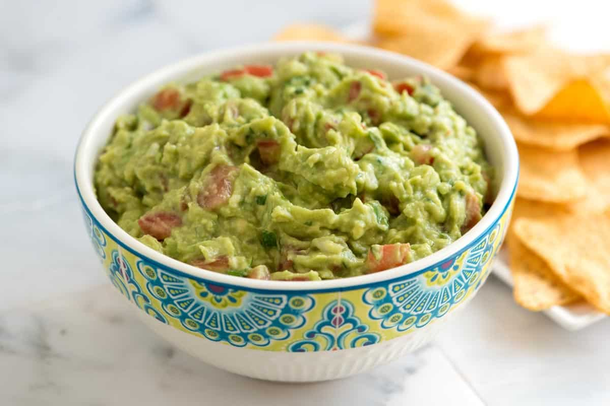

Guacamole

Description
Recipe for creamy homemade guacamole. Great for a quick snack, and could also be added to tacos and burritos as a topping. Quick recipe with minimal effort.
Ingredients
- 3 ripe medium avacados
- 1/4 cup finely chopped onion
- 1 1/2 tbsp fresh lime juice
- 1/4 cup cilantro leaves and tenders, chopped
- 1 large Roma tomato, chopped
- 1/2 tsp salt
- 1/2 tsp ground cumin
- 2 tsp finely chopped jalapeño
Steps
- Finely dice 1/4 cup onion
- Put onion in small bowl and cover with warm water
- Cut 3 avacados and put them in a bowl
- Add lime juice to bowl and mash till chunky
- Remove seeds from tomato and dice
- Add chopped cilantro and tomato to bowl
- Add the onions from before to the bowl
- Add cumin and salt
- Stir ingredients and serve
Homepage
Credits
How to Make Fresh Homemade Guacamole - Inspired Taste